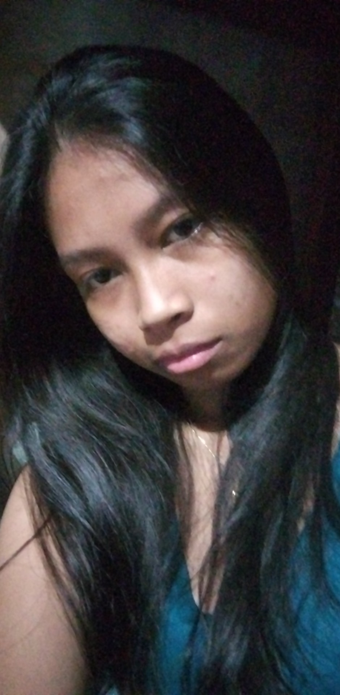
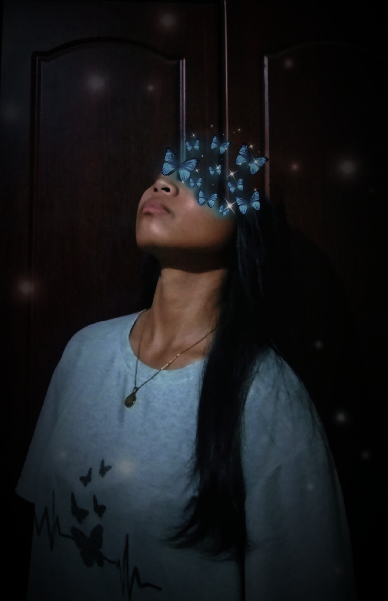
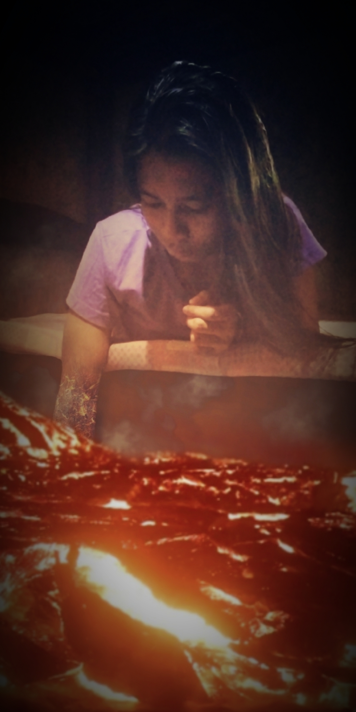
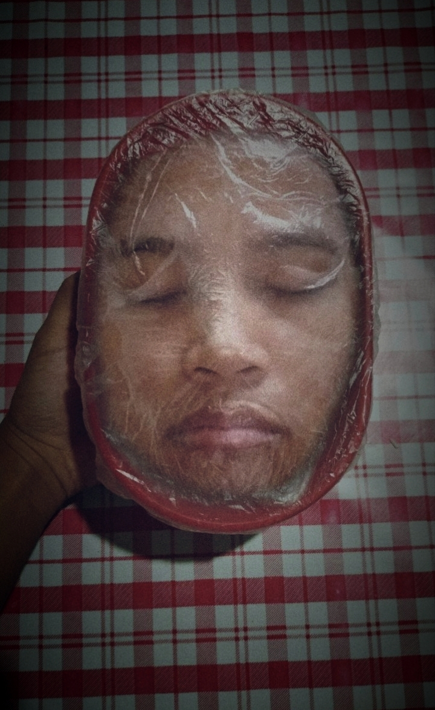
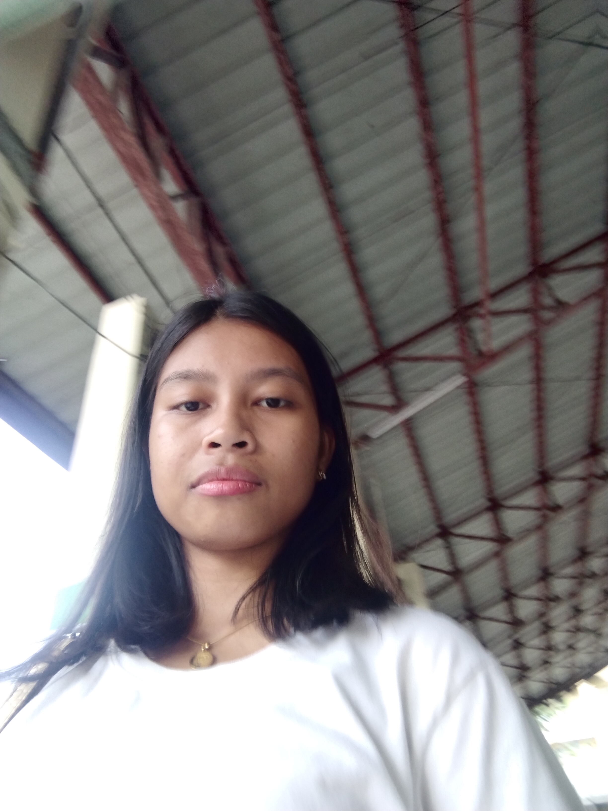

Hello! I am Loren Reformado
LorEdits is a website by Loren Reformado, a professional in the field of photo editing. i love to alter different types of photograpy that hold different genres. I started editing at a young age. I took BSIT as a main college course to expand my knowledge and joined seminars to gather more experience.
My interest has been photo editing ever since. These are some of my works:



Who is Loren?

Loren Reformado is an aspiring photo editorist. She is a woman who always wants to try something new. She also delves into the world of video editing, voice over, and literature works. She wanted to do and try everything that the world has to offer. However, many hindrance can be felt. Will she give up? NO, not in her vocabulary.
For more inquiries, contact me!